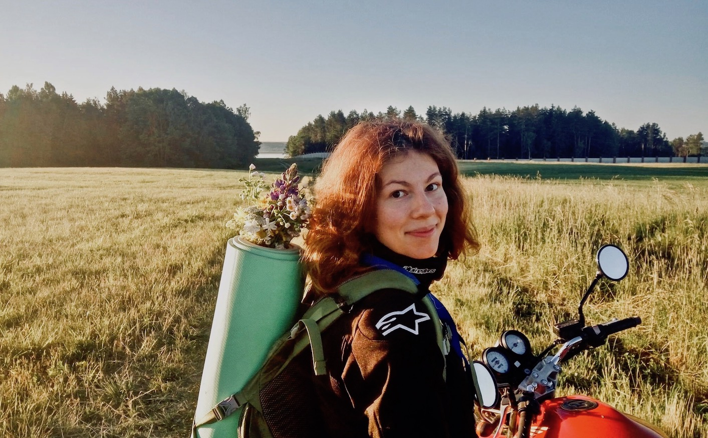

Yana Kalashnikova

0. ##email: kalashnikova.yana3@gmail.com | mobile: +375447852164 h2
0. ##Summary: h2
* I am Junior Front-end Developer with more than 1 year of experience in IT. I have good knowledge in JavaScript, HTML5 and CSS3. I am positive, social and easy-going person, who always demonstrate very good collaboration with team members. Also I have strong skills in problem-solving and business communications. I am ready to obtain new responsibilities and looking for interesting experience!
0. ##Skills: h2
JavaScript, HTML, CSS, HTML5, CSS3, React, Bootstrap
0. ##Code example: h2
0. ##Work Experience: h2
* Junior Front-end
* Frееlance
Website Development
HTML5 CSS3 JAVASCRIPT BOOTSTRAP REACT
* Portfolio (https://github.com/YanaKalashnikova) [https://github.com/YanaKalashnikova]
0. ##Education: h2
- Belarusian State University
- The Rolling Scopes course
- IELS Institute of English Language Studies in Malta (B2 certificate)
0. ##Intermediate English Level B2 h2
* I am using English at work daily. Also I have weekly English courses and individual tutor.
Bytheway I have been abroad to learn English IELS Institute. Traveling to Malta is an important life experience for me to improve my language skills.